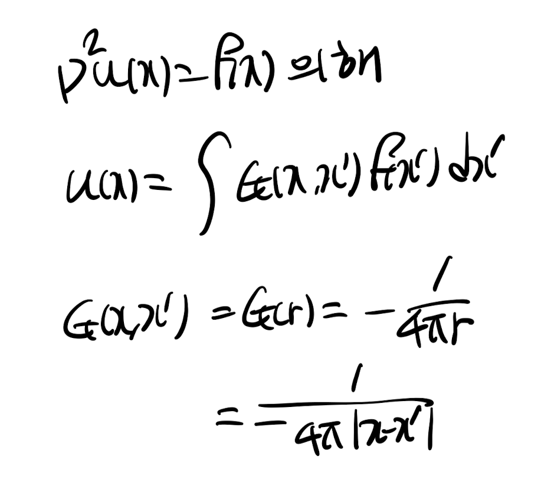
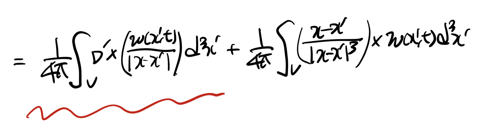
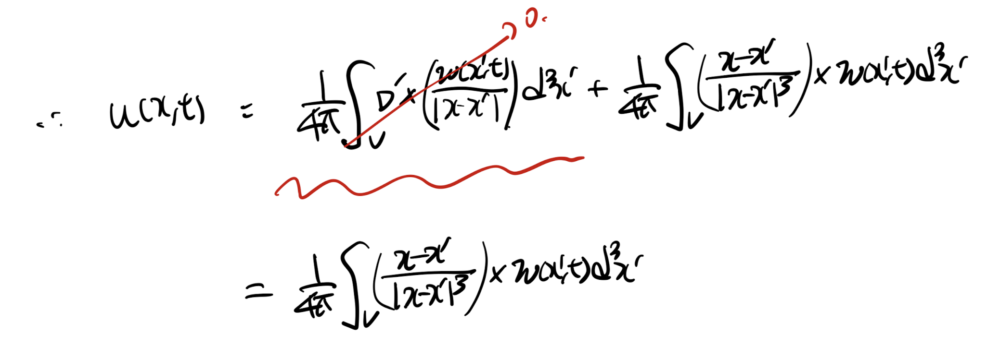
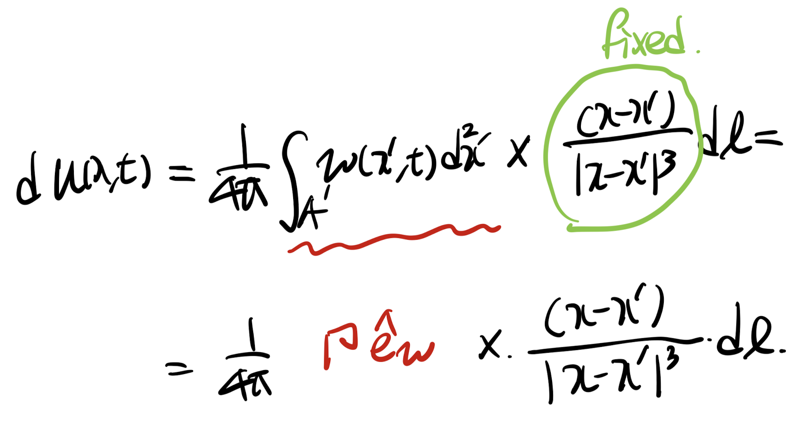

<!DOCTYPE html>
<html lang="ko">
<head>
  <meta charset="utf-8">
  <meta name="viewport" content="width=device-width, initial-scale=1">
  <title>Ch3 Vorticity dynamics_ Biot-Savart Vortex induction law(2) | Sehyeog Kim</title>
  <link rel="stylesheet" href="../../../../assets/css/style.css">
</head>
<body>
  <header class="mobile-header">
    <span class="site-title">Sehyeog Kim</span>
    <button class="menu-toggle" aria-label="Menu">&#9776;</button>
  </header>
  <div class="sidebar-overlay"></div>

  <div class="site-wrapper">
    <aside class="sidebar">
      <div class="sidebar-bg">
        
      </div>
      <div class="sidebar-profile">
        
        <h1 class="profile-name">Sehyeog Kim</h1>
        <p class="profile-bio">AI &amp; Computational Engineering<br>Personal Blog</p>
        <div class="profile-links">
          <a href="https://github.com/Sehyeogkim" target="_blank" rel="noopener">
            <svg viewBox="0 0 16 16" width="15" height="15" fill="currentColor"><path d="M8 0C3.58 0 0 3.58 0 8c0 3.54 2.29 6.53 5.47 7.59.4.07.55-.17.55-.38 0-.19-.01-.82-.01-1.49-2.01.37-2.53-.49-2.69-.94-.09-.23-.48-.94-.82-1.13-.28-.15-.68-.52-.01-.53.63-.01 1.08.58 1.23.82.72 1.21 1.87.87 2.33.66.07-.52.28-.87.51-1.07-1.78-.2-3.64-.89-3.64-3.95 0-.87.31-1.59.82-2.15-.08-.2-.36-1.02.08-2.12 0 0 .67-.21 2.2.82.64-.18 1.32-.27 2-.27.68 0 1.36.09 2 .27 1.53-1.04 2.2-.82 2.2-.82.44 1.1.16 1.92.08 2.12.51.56.82 1.27.82 2.15 0 3.07-1.87 3.75-3.65 3.95.29.25.54.73.54 1.48 0 1.07-.01 1.93-.01 2.2 0 .21.15.46.55.38A8.013 8.013 0 0016 8c0-4.42-3.58-8-8-8z"/></svg> GitHub
          </a>
        </div>
      </div>
      <nav class="sidebar-nav">
        <a href="/" class="nav-item nav-home">Home</a>
        <span class="nav-group-label">AI</span>
        <a href="/blog/ai/agentic-ai-theory/" class="nav-item">Agentic_AI_Theory<span class="nav-post-count">8</span></a>
        <a href="/blog/ai/deep-learning/" class="nav-item">Deep-learning<span class="nav-post-count">14</span></a>
        <a href="/blog/ai/machine-learning/" class="nav-item">Machine_Learning<span class="nav-post-count">11</span></a>
        <a href="/blog/ai/sensitivity-analysis/" class="nav-item">Sensitivity_Analysis<span class="nav-post-count">3</span></a>
        <span class="nav-group-label">BioMechanics</span>
        <a href="/blog/biomechanics/blood-flow-and-metabolism/" class="nav-item">Blood-Flow-and-Metabolism<span class="nav-post-count">12</span></a>
        <a href="/blog/biomechanics/cardiovascular-diseases/" class="nav-item">CardioVascular_Diseases<span class="nav-post-count">8</span></a>
        <span class="nav-group-label">Mechanical_Engineering</span>
        <a href="/blog/mechanical-engineering/computational-linear-algebra/" class="nav-item">Computational-Linear-Algebra<span class="nav-post-count">15</span></a>
        <a href="/blog/mechanical-engineering/computational-fluid-dynamics/" class="nav-item">Computational_Fluid_Dynamics<span class="nav-post-count">14</span></a>
        <a href="/blog/mechanical-engineering/continuum-mechanics/" class="nav-item">Continuum-Mechanics<span class="nav-post-count">9</span></a>
        <a href="/blog/mechanical-engineering/engineering-mathematics/" class="nav-item">Engineering_Mathematics<span class="nav-post-count">14</span></a>
        <a href="/blog/mechanical-engineering/finite-element-method/" class="nav-item">Finite-Element-Method<span class="nav-post-count">1</span></a>
        <a href="/blog/mechanical-engineering/fluid-mechanics/" class="nav-item">Fluid_Mechanics<span class="nav-post-count">18</span></a>
        <a href="/blog/mechanical-engineering/gas-dynamics/" class="nav-item">Gas_Dynamics<span class="nav-post-count">24</span></a>
        <a href="/blog/mechanical-engineering/heat-transfer/" class="nav-item">Heat-transfer<span class="nav-post-count">8</span></a>
        <a href="/blog/mechanical-engineering/solid-mechanics/" class="nav-item">Solid_Mechanics<span class="nav-post-count">25</span></a>
        <a href="/blog/mechanical-engineering/thermodynamics/" class="nav-item">Thermodynamics<span class="nav-post-count">14</span></a>
        <a href="/blog/mechanical-engineering/viscous-flow/" class="nav-item active">Viscous_Flow<span class="nav-post-count">28</span></a>
      </nav>
    </aside>

    <main class="main-content">
      <div class="breadcrumb"><a href="/">Home</a><span class="sep">/</span><a href="/blog/mechanical-engineering/">Mechanical_Engineering</a><span class="sep">/</span><a href="/blog/mechanical-engineering/viscous-flow/">Viscous_Flow</a><span class="sep">/</span><span>Ch3 Vorticity dynamics_ Biot-Savart Vortex induction law(2)</span></div>
<a href="/blog/mechanical-engineering/viscous-flow/" class="back-link">&larr; Back to Viscous_Flow</a>
<div class="page-header"><h1>Ch3 Vorticity dynamics_ Biot-Savart Vortex induction law(2)</h1></div>
<div class="post-meta"><span class="meta-item"><span class="meta-label">Date:</span> 2024-10-18</span><span class="meta-item"><span class="meta-label">Category:</span> Viscous_Flow</span><span class="meta-item"><span class="meta-label">Source:</span> <a href="https://jeffdissel.tistory.com/m/119" target="_blank" rel="noopener">link</a></span></div>
<article class="post-content"><p>Ch3 Vorticity dynamics_ Biot-Savart Vortex induction law(2)<br />
이전 포스터를 . 꼭 참고해주세요.<br />
https://jeffdissel.tistory.com/118<br />
Ch3 Vorticity dynamics_ Biot-Savart Vortex induction law(1)<br />
여기서, 한가지 의문점이 든다. vorticity, w = curl(v)라는 것을 우리는 알고 있고, 만약에 vorticity 를 토대로Velociy(속도) 장을 구할 수 있을까?? 해답인Vorticity 와 Velocity관계식을 유도해보자. ___<br />
jeffdissel.tistory.com<br />
우리가 지금 하고 있는 것은,<br />
유체공간 내에서<br />
w(vorticity)를 통해 -&gt; u(velocity) 유도하기<br />
Incompressible flow 가정을 해주어,<br />
다음 포아송 방정식의 u를 구해보자.<br />
<br />
지난 시간의 내용의 요약은<br />
<br />
이어서 가보시죠.<br />
자 우리가 풀 미분 방정식으로 돌아와보면,<br />
f(x) = - curl(w) 인 상황이다.<br />
<br />
따라서, General solution은 지난 포스터에서 증명한 대로 다음과 같다.<br />
+ G(x,x') 지난시간에 구한 대로 대입해주자.<br />
<br />
여기서, Volume integral 로 표현 된 이유는,<br />
바로, x' 이 3차원공간안을 움직이기 때문이다.<br />
(Vortex tube 내부에 x' 이 있는 상황)<br />
<br />
<br />
여기서 1번 식을 정리하기 위해, vector 성질을 이용하자.<br />
<br />
위 벡터 분해를 그대로 1번 식에 대입해주면,<br />
u(x,t) 는 다음과 같다.<br />
<br />
여기서 빨간색으로 밑줄 처진 부분 = 0. 임을 증명하자.<br />
<br />
위 식에서 A가 의미하는 바는 vortex tube의 모든 겉 표면이다.<br />
따라서, Tube의 윗면 아랫면을 먼저 살펴보면<br />
평면의 법선벡터와 w가 평행하므로,<br />
n x w = 0<br />
<br />
옆면의 경우,<br />
Stoke's theorem으로 인해<br />
<br />
n x w 면적분 =<br />
결국 vortex tube를 위에서 봤을때,<br />
각 단면의 경계에 tangential 한 벡터 F를<br />
폐곡선 C로 선적분 한것과 같다.<br />
즉, zero 이다.<br />
결론적으로, 우항 first term = 0<br />
따라서, 다음과 같이 표현 가능하다.<br />
<br />
이후, 위 u(x,t)를 circulation으로 표현하기 위해<br />
vortex tube를 원기둥으로 고려하고<br />
(dV' = dA' dl)<br />
+<br />
아주 작은 segment에서 du(x,t)를 구하고 총 체적분을 해주자.<br />
<br />
아주 작은 segment 의 특징은 x, x' 이 fixed 하다는 점이다.<br />
<br />
이후, vortex tube 전체 적분을 해주면<br />
<br />
최종식은 전체 vortex tube의 circulation을 통해서u를 유도한 식인것.</p></article>
      <footer class="site-footer">
        <p>&copy; 2026 Sehyeog Kim</p>
      </footer>
    </main>
  </div>
  <script src="../../../../assets/js/main.js"></script>
</body>
</html>